Apa itu Mobile Legends?
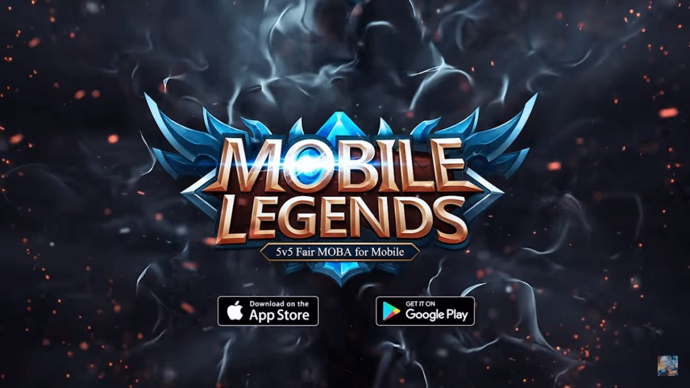
Mobile Legends adalah game yang dikembangkan dan dirilis oleh Moontoon developer.
Game ini dapat dimainkan di platform mobile Android dan iOS.
Permainan ini dimainkan sebanyak 10 orang yang terbagi menjadi 2 tim.
Permainan dimulai dengan setiap pemain memilih 1 hero dari daftar hero yang bisa diakses oleh pemain.
Hero yang tersedia adalah hero yang telah dibeli dan hero yang sedang dipinjamkan secara gratis kepada pemain oleh sistem.
Dengan kata lain, tidak semua hero dapat langsung dimainkan.
Lama permainan berkisar sekitar 15 menit untuk 1 ronde.
Tujuan Permainan
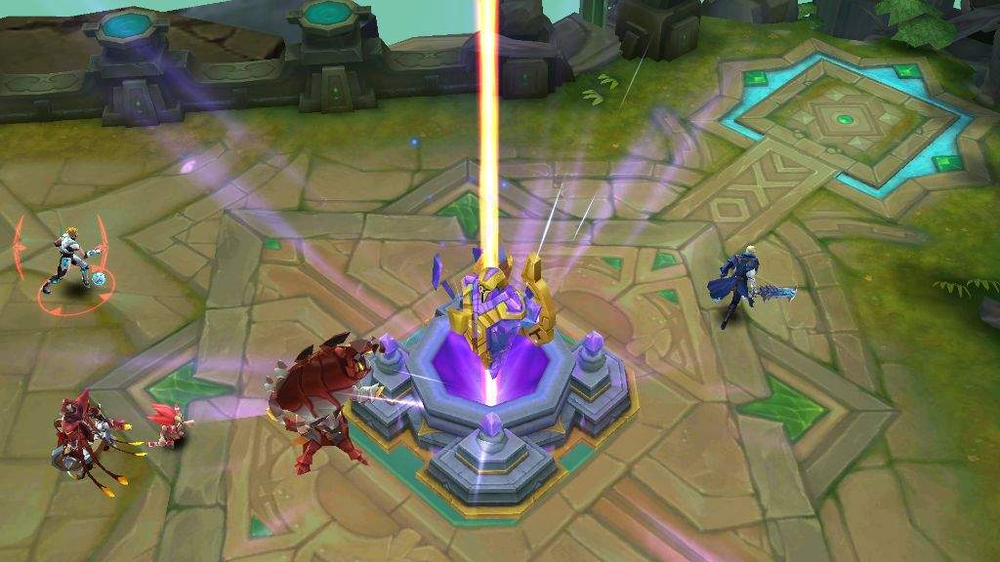
Tujuan utama permainan adalah untuk menghancurkan base lawan.
Terdapat 3 lane utama dalam map, yaitu middle, top, dan bottom lane.
Masing-masing lane dijaga oleh Turret yang akan menyerang unit musuh secara otomatis.
Setiap lane juga memiliki bangunan barrack yang jika dihancurkan akan membuat creep/minion lawan menjadi semakin kuat.
Apabila semua barrack hancur, maka tim lawan akan memiliki super minion yang jauh lebih kuat dibanding minion biasa.
Di luar jalur lane setiap tim, juga terdapat jungle yang berisi jungle creep yang akan memberikan buff pada unit yang mengalahkan creep tersebut.
Permainan berakhir ketika base salah satu tim hancur.
Apa itu Hero?
Hero adalah karakter unik yang hanya dapat dimainkan oleh 1 player pada setiap ronde permainan.
Hero dapat dibeli dengan melakukan Top Up diamond, atau dengan menggunakan ticket dan Battle Point.
Setiap hero memiliki 4 skill, dengan 1 passive skill dan 3 active skill.
Marksman
Hero tipe ini memiliki skill dan bassic attack yang tinggi.
Selain itu, Marksman memiliki jangkauan skill area yang besar.
Hero ini memiliki peran sebagai penyerang utama dalam permainan.
Namun, dari segi defense hero ini kurang.
Jadi diperlukan siasat agar tidak mudah dibunuh saat menggunakan hero tipe ini.
Tank
Tipe hero ini memiliki base HP dan Armor yang besar sehingga dapat menerima damage yang besar dari lawan untuk melindungi tim.
Hero ini sangat cocok berada di garis depan untuk membuka jalan bagi rekan setimnya.
Walaupun memiliki pertahanan yang kuat, hero tank tak memiliki damage yang mumpuni.
Walaupun begitu, hero ini mampu memecah belah formasi lawan.
Mage
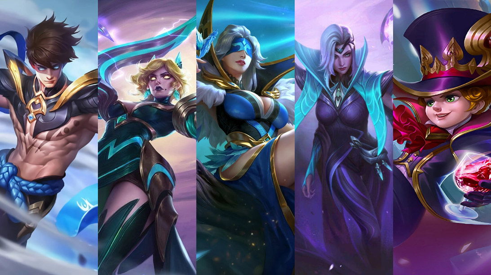
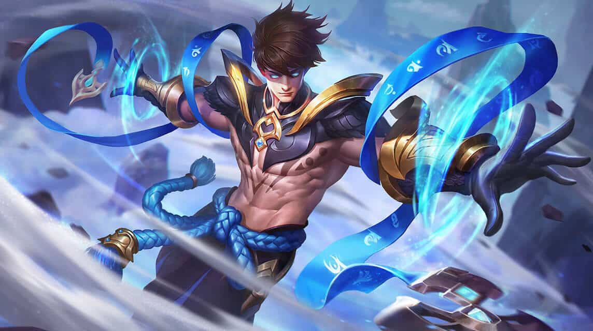
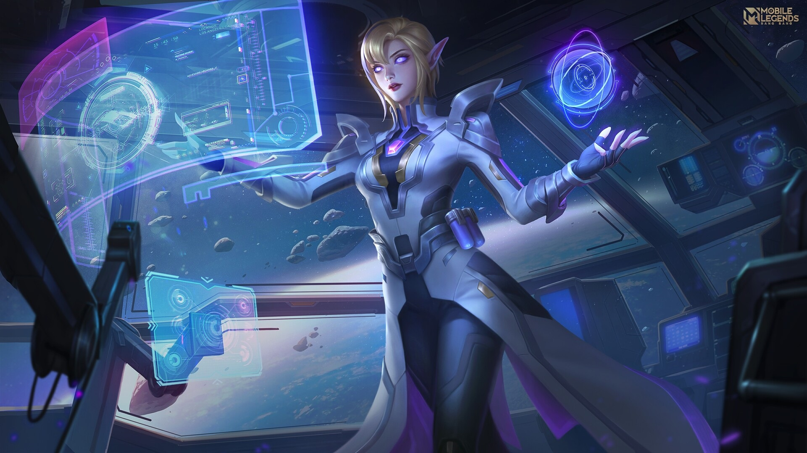
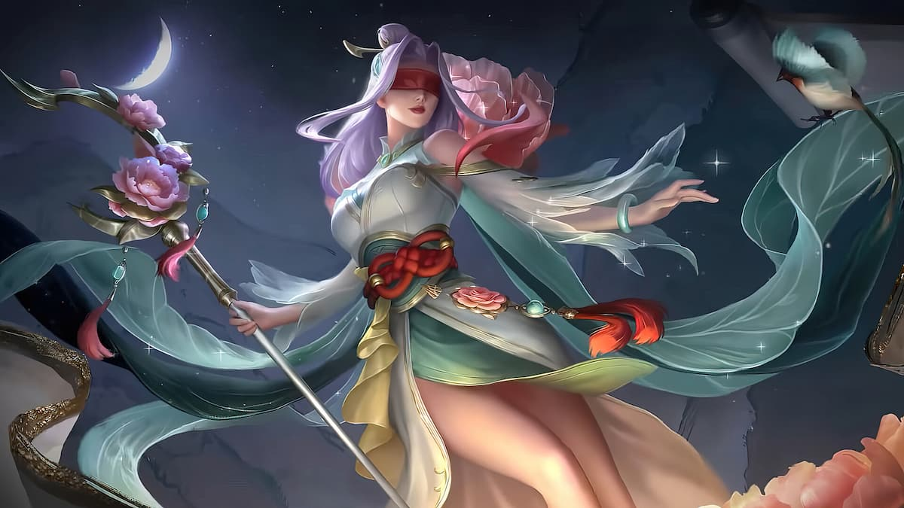
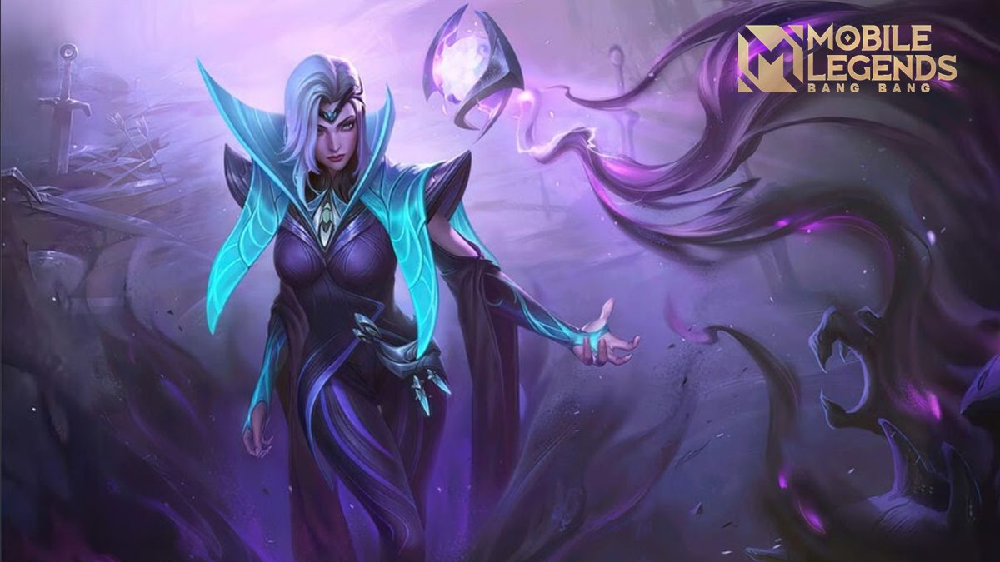
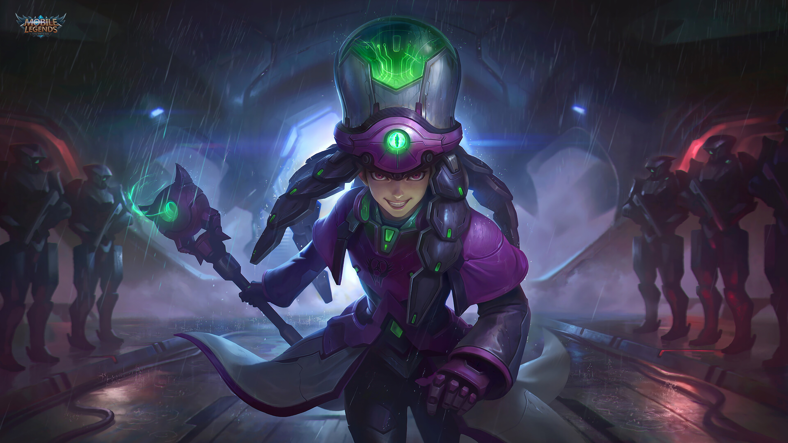
Hero dengan tipe Mage sering membuat lawan takut.
Hal itu dikarenakan hero ini memiliki skill dengan damage yang besar.
Dengan dibekali efek ability yang tinggi, hero ini dapat melakukan quick kill kepada hero lawan.
Hero satu ini kerap dijadikan petarung untuk mendukung hero lainnya saat menyerang.
Support
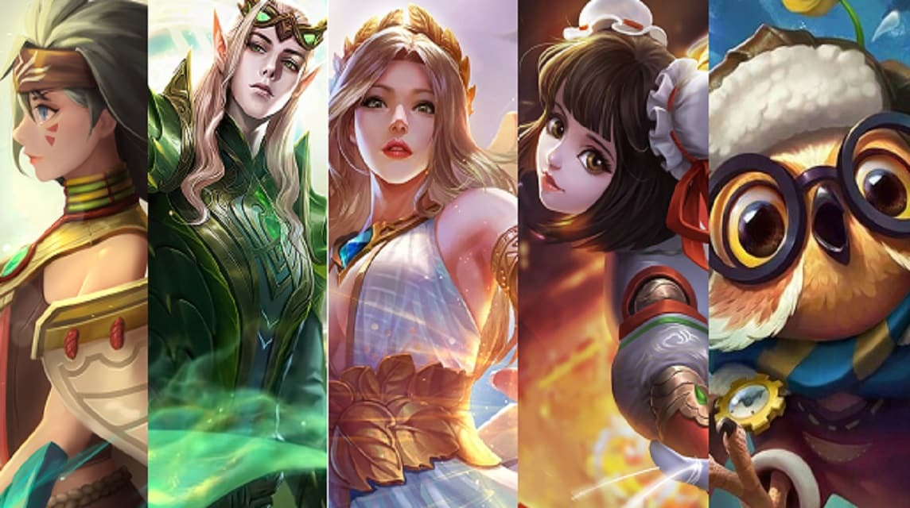
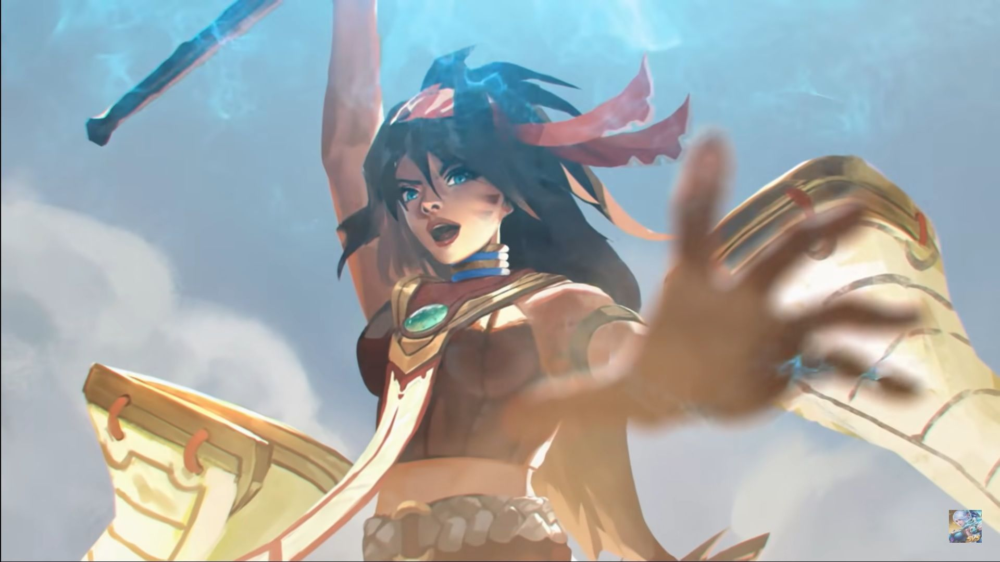
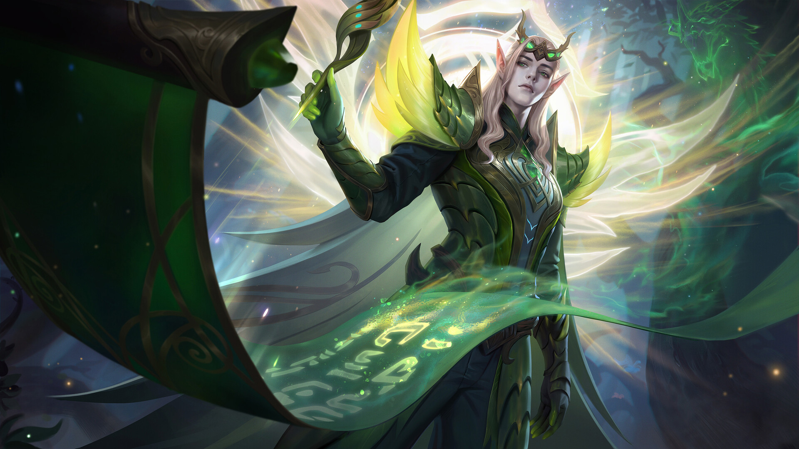
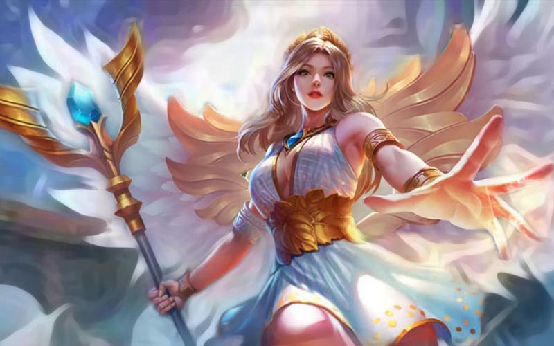
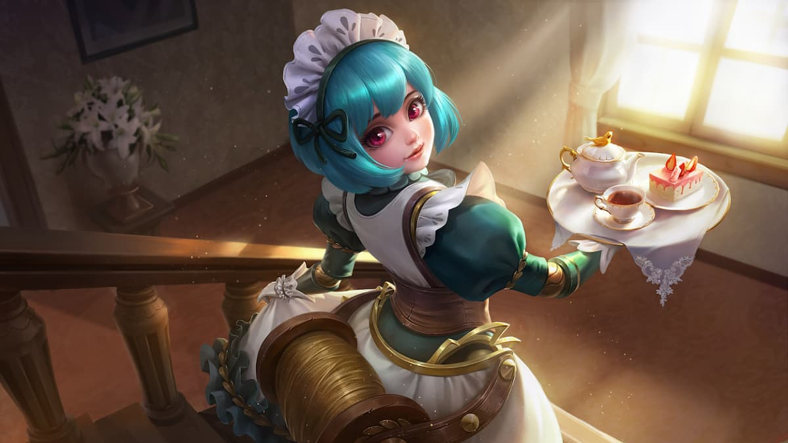
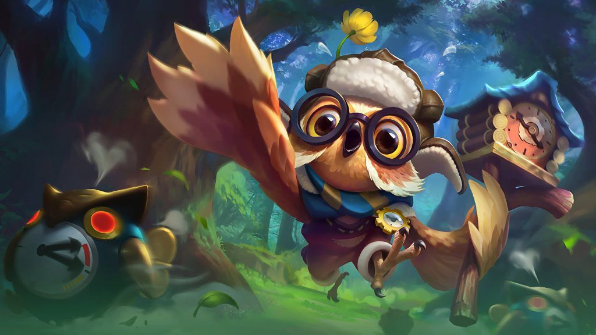
Tipe hero ini memiliki skill yang berguna untuk menjaga tim serta membantu tim ketika sedang bertempur.
Assassin
Hero ini memiliki damage yang cukup tinggi dan sangat lincah dalam permainan.
Belum lagi, hero ini memiliki skill yang mampu membuat karakternya kebal terhadap serangan lawan serta dapat melakukan lock kepada lawan.
Apa itu Role?
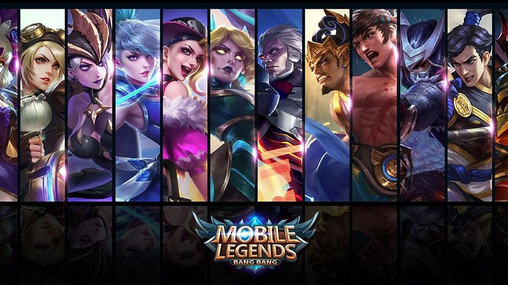
Mobile Legends adalah salah satu jenis permainan yang mengandalkan kekompakan tim.
Oleh sebab itu, komposisi tim dengan peran yang tepat merupakan hal yang sangat penting untuk memenangkan permainan.
Role adalah pembagian tugas dalam permainan.
Umumnya role dibuat agar sinergi dan kekompakan tim tetap terjaga.
Jenis-jenis tersebut adalah:
- Carry, yaitu role yang bertugas sebagai pemberi damage utama ketika war. Umumnya merupakan hero tipe Marksman. Role carry membutuhkan intensitas farm dan levelyang tinggi untuk mencapai potensinya. Contoh hero marksman adalah Miya, Layla, dan Clint.
- Tank, yaitu role yang bertugas sebagai penerima damage ketika war. Tank juga harus berada di barisan paling depan guna melindungi teman setimnya. Tank memiliki base HP dan Armor yang tinggi yang membuat mereka susah dikalahkan. Contoh hero tank adalah Balmond, Tigreal, dan Franco.
- Support, yaitu role yang bertugas membantu hero carry mendapatkan farm ataupun melakukan gank pada tim lawan. Role ini tidak terlalu membutuhkan farm dan level. Contoh hero support adalah Rafaela dan Nana.
Mode Permainan
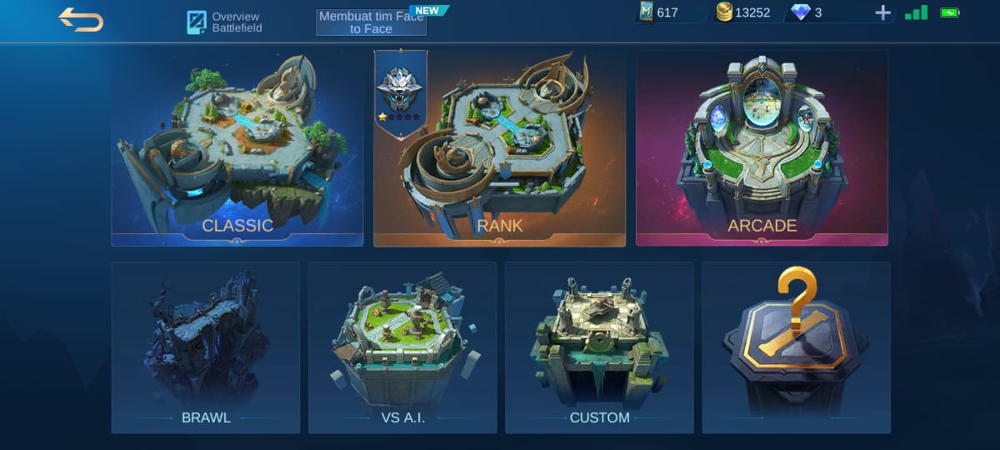
Classic
Mode umum dimana pemain bermain melawan pemain lain tanpa pengkategorisasian tingkat kemampuan pemain.
Mode ini memberikan kesempatan kepada para pemain untuk bertanding 5 lawan 5 tanpa khawatir turun peringkat apabila kalah.
Pada mode ini, pemain dapat dengan bebas memilih hero yang dimiliki, ditambah hero gratis mingguan dan trial.
Namun, dalam satu tim tidak bisa ada hero yang sama.
Rank
Mode yang dimainkan berdasarkan tingkatan medal pemain.
Pemain akan bermain dengan pemain yang memiliki level medal yang sama.
Jika kalah maka pemain akan kehilangan bintang medal, sedangkan jika menang akan memperoleh medal tambahan.
Ada total 7 tingkatan dalam mode Rank: Warrior, Elite, Master, Grand Master, Epic, Legend, dan Mythic.
Brawl
Mode ini lebih memfokuskan untuk pertarungan intens antar tim.
Pemain dari kedua tim akan berjumpa langsung di sebuah lane.
Pertandingan Brawl biasanya berakhir dalam waktu yang jauh lebih singkat dibandingkan dengan Mode Classic dan Rank.